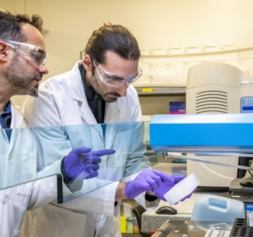

| BeemsGamers Web (Click Here) | Selamat Datang Guys... |
7 Pembunuh Berantai Paling Kejam dalam Sejarah, Layak Disebut Manusia?Pembunuh berantai menjadi makhluk paling gila yang berkeliaran di Bumi. Biasanya mereka tidak puas dengan hanya membunuh satu orang saja, mereka akan kembali di peristiwa lain untuk memangsa korban kedua dan seterusnya. Itulah mengapa mereka dicap sebagai Lihat Selanjutnya |
5 Fakta Sains tentang Sejarah Penemuan Kemoterapi dalam Dunia Medis
Secara sederhana, kemoterapi dapat diartikan sebagai pengobatan yang digunakan untuk melawan sel-sel kanker. Menurut laman medis Cancer, pengobatan kemoterapi merupakan salah satu cara yang paling efektif untuk mencegah agar sel-sel kanker tidak kembali tumbuh dan membelah secara liar. Namun, Lihat Selanjutnya |
7 Eksperimen Sains Paling Berbahaya dalam Sejarah, Banyak Orang Tewas
Sains adalah kekuatan yang digunakan untuk kebaikan di dunia ini, mereka mampu meningkatkan kehidupan orang-orang di seluruh Bumi dengan cara yang tak terukur. Sayangnya, sains juga merupakan alat yang sangat kuat yang berpotensi menjadi berbahaya dalam beberapa situasi, contohnya ketika terlibat dalam kepentingan seperti politik. Bahkan, Lihat Selanjutnya |
5 Teori Sains Terkenal yang Awal Mulanya Dipandang Sebelah Matalmu pengetahuan tidak dapat dipisahkan begitu saja dari segala macam teori-teori sains yang ada di dunia ini. Ya, teori-teori sains tersebut memang pernah digagas oleh ilmuwan atau penemu yang saat ini digunakan sebagai landasan dalam kerangka berpikir sebuah kaidah keilmuan eksak. Namun, tahukah kamu bahwa dulunya teori-teori terkenal ini pun pernah diremehkan dan dianggap salah Lihat Selanjutnya |
Nama: Muhammad Bimo RamadhanUsia: 16 TahunTTL: Bogor, 10 November 2003Tempat Tinggal: Bogor, IndonesiaMotto Hidup:"Saat Engkau Sedang Tidur-Tiduran, Sedang
|
Follow My Social Media!
|